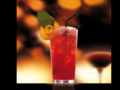
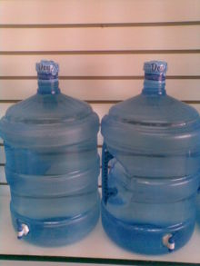
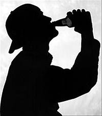
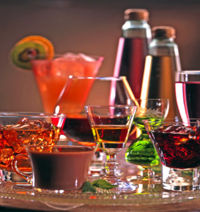

Cubata
 De: La Frikipedia, la enciclopedia extremadamente seria.
De: La Frikipedia, la enciclopedia extremadamente seria.
Dícese de la bebida (alcohólica, por supuesto) con más peligro del mundo pero que, al mismo tiempo, nos puede transportar hasta la séptima gloria a manos de los angelitos celestiales y con una visita guiada a Monstruo Espagueti Volador (no incluye permiso para usar cámaras, listos).
Ecuación del Cubata
 La bebida de los dioses más caprichosos... ni Dionisio se atrevería a soñar con ella...
El cubata es una bebida con carácter subjetivo. Cada persona se lo fabrica y se lo bebe a gusto o de acuerdo con el tipo de servicio contratado al entrar en el bar/pub/discoteca en cuestión (es decir, que depende de lo que paguemos en la entrada, si nos lo tomamos en casa o lo que sea). De acuerdo con las ecuaciones que disponemos a continuación, podemos fabricar varios tipos de cubatas:
Ecuación del Cubata Estándar. Un típico ejemplo de la misma serían el Ron con Cola o el Vodka con Limonada. Poco original.
Cubata = Vaso de Tubo + Hielo + Bebida Alcohólica de Alcohol Destilado + Bebida No Alcohólica
Ecuación del Cubata de Empresa Capitalista para las Masas. Es el el típico cubata que te sirven en una discoteca o bar cualquiera. Sirve para cobrarle al cliente un importe superior a 6 €/unidad por un producto cuyos costes representan el 10% de los ingresos, dejando así un margen de beneficio del 90%. El margen de error de los beneficios suele ser de un 5%.
Cubata = 5%Vaso de Tubo* + 40%Hielo + 15%Bebida Alcohólica de Alcohol Destilado DE GARRAFÓN + 40%Bebida No Alcohólica
*El vaso de tubo ocupa su espacio... la diferencia es que aquí el vaso a veces va untado con unos polvos que todavía le dan
peor sabor a la bebida. En teoría son para que no se peguen los vasos unos a otros y se vaya más rápido. En teoría.
Ecuación del Cubata de Empresa Capitalista para los Clientes VIP. Un ejemplo del mismo local (o lo que sea) anterior. La diferencia es que ahora los clientes no son la gente de calle sino los colegas de los jefes que enseñan su tarjeta al camarero. O son conocidos del camarero. O son VIPS que van directamente a la barra adecuada a pedir bebida.
Cubata = 5%Vaso de Tubo + 30%Hielo + 35%Bebida Alcohólica de Alcohol Destilado DE BOTELLA BUENA + 29%Bebida No Alcohólica + 1% Pajita
 De ahí salen los cubatas de mala calidad... ò_ó
Ecuación del Cubata para Paletos. Cuando un camarero va de listo y se cree que el de enfrente es gilipollas/novato, suele usar una fórmula distinta a la del CECM. Suele ser menos satisfactoria, claro. La reacción puede ser de tres tipos:
- El cliente se bebe el cubata resignadamente (y lo paga resignadamente).
- El cliente, antes de pagar, ve la mezcla que le están preparando, se va de la barra y lo pide en otro lado. El camarero, para colmo, intenta divisar a "ése que parecía tonto" entre la multitud de perros y leones ansiosos de conseguir alcohol a cualquier precio, cubata en mano.
- El cliente reacciona de forma violenta con el camarero, cosa que alerta a los de seguridad. También conocidos como "seguratas" o "panda de capullos"
Cubata = 5%Vaso de Tubo + 45%Hielo + 5%Bebida Alcohólica de Alcohol Destilado + 45%Bebida No Alcohólica
Ecuación del Cubata para Borrachos. El avaricioso camarero se aprovecha del estado... extremadamente etílico... para sonsacarle la pasta al cliente que todavía está dispuesto a pagar. Habitualmente el cliente va ciego del todo, lo que impide su vista nítida y concentración, pero no su capacidad para seguir pidiendo alcohol.
Cubata = 5%Vaso de Tubo + 30%Hielo + 65%Bebida No Alcohólica
Ecuación del Cubata para Emborracharse Pronto. Este cubata no se suele servir en locales de ningún tipo, a no ser que el jefe o camarero en cuestión te tenga un verdadero aprecio y esté dispuesto a servirte uno para hacerte un favor. En la mayoría de los casos este cubata se sirve en el archifamoso botellón.
Cubata = 5%Vaso de Tubo + 10%Hielo + 70%Bebida Alcohólica de Alcohol Destilado + 15%Bebida No Alcohólica
*Nota: Estos porcentajes pueden variar de la siguiente forma: Como mucho puede subir el de la bebida alcohólica, mientras
que los de la bebida no alcohólica y el hielo tienen que bajar en proporción inversa a la del acohol.
Ecuación del Cubata con Gustos Alternativos. A éste se le echan varios ingredientes alternativos a los del Cubata Estándar, para que el bebedor pueda adulzar su gusto, convertirlo en exótico, convertirlo en imbebible para que nadie le pida un sorbo... hay variables... Se suelen conservar algunos elementos como fijos para que el cubata se siga considerando cubata. Sin ello, el cubata perde su esencia y queda convertido en "algo raro"
100% Cubata = 5%Vaso de Tubo + x%Hielo + x%Bebida Alcohólica de Alcohol Destilado + x%Otro(s) ingrediente(s)
¿Qué es y qué no es un cubata?
Hay gente y gente que se cree que con juntar una bebida con otra ya obtienen un cubata. Sí, y unos cojones huevos. Echarle un hielito a la horchata te puede convertir en un sediento, pero no en un HOMBRE que es HOMBRE porque ya BEBE ALCOHOL.
Aparte, están las mamás y los papás que incitan a sus niños de doce años a la bebida, a fumar tabaco (y luego lo niegan todo porque fumar delante de ellos no es malo) y empiezan por ofrecerte una cerveza por primera vez en tu vida, cuando todavía ni te han salido los primeros pelillos del bigote. Niño, todavía te queda para los cubatas, hasta que puedas quedarte sólo en casa y meterle mano a la llave del minibar del comedor (o donde quiera que lo tengas).
La lista desordenada seguiría, pero algo me dice que los lectores necesitan un artículo fácil de leer y que no dañe a la vista. Así pues, para iluminar esas mentes que lo necesiten y quieran hacerse los primeros cubatas en casa (o en la calle) hasta que tengan edad para ir a los bares, deben tener en cuenta esta serie de normas.
- Un cubata es una mezcla de líquidos en un vaso de tubo. Necesariamente tiene que ser en un vaso de tubo transparente o translúcido. Si se sirviera en la taza del desayuno no se llamaría cubata, se llamaría bol con cerales. Cutre, ¿no?
- Un cubata tiene que contener ALCOHOL DESTILADO, no ALCOHOL FERMENTADO. Un kalimotxo (vino tinto con cocacola) es un kalimotxo, ha sido kalimotxo y siempre será kalimotxo, pero nunca será un CUBATA.
- Un cubata siempre tiene que llevar hielo. La graduación de la bebida hace que sea imbebible si se calienta, además que el hielo no profana el cubata. Si mezcláramos el hielo con birra sería considerado sacrilegio (para evitar que se caliente se bebe rápido o si no te jodes). Pero estamos hablando de cubatas y de la conservación de su temperatura para evitar desastres en su proceso de ingesta.
- No es indispensable juntar el alcohol destilado con una bebida no alcohólica. La receta del cubata alternativo propone la unión del alcohol destilado con cualquier otra bebida, ya sea alcohol fermentado o cualquier otro tipo de bebida.
- Eso sí, por muy alternativos que seamos, el alcohol destilado tiene que juntarse con otra bebida. No puedes juntar vodka con colacao porque a eso no se le llama cubata. Para los niños bien educados se llama vodka con colacao. Para los mal educados se llama marranada (aunque todos pensemos que esto se llama MIERDA).
Orígenes del Cubata
Todo empezó gracias a los marineros del Siglo XVIII.
La principal característica de los citados es que pasaban meses y meses viajando en barco de Europa a América, de América a Oceanía, hacia Asia, hacia África, hacia el Cielo y hacia el Infierno. Al parecer, a la peña no le acababa de molar que sus compañeros la palmaran durante los viajes o cuando apenas acabasen de llegar a tierra firme. La semilla de la muerte en el mar viajaba en esas enormes cajas de madera.
Bueno, aparte que las ratas se paseaban como Pedro por su casa por encima de la comida en las bodegas y en la cocina. Y donde les diera la gana.
Va, retomemos el hilo. La principal causa de la muerte eran las enfermedades que cogían los de a bordo por culpa de la intoxicación y virus varios. La falta de médicos cualificados todavía agravaría el problema.
Paralelamente, un bodeguero borracho en su bodega, harto de ver siempre a su misma clientela de siempre, borrachos como siempre, borracho él como siempre y de lo mismo de siempre recibió un cliente enfermo de escorbuto, pidiendo un vaso de vodka para hacerle pasar el dolor de su enfermedad.
El bodeguero, que sólo le quedaba un culillo de vodka, regateó con el enfermo. Si éste le dejaba mezclar el zumo de lima cubana que traía bajo el brazo con el vodka, le bajaba el precio. El marinero aceptó y prestó su zumo de lima al camarero.
Así se originó lo que daría paso a los cubatas en un futuro: zumo de lima con vodka.
Se atribuyeron poderes mágicos al cubata ingerido, puesto que el escorbuto del marinero mejoró rápidamente.
Médicos curiosos investigaron sobre el asunto y descubrieron que el consumo de frutas ácidas mejoraba notablemente enfermedades como el escorbuto, pero presentaban el inconveniente de que se pasaban rápidamente. Se les ocurrió de repartir entre la tropa cantidades diarias de fruta, pero era necesario un invento para conservarlas y que no se pasaran. Exprimirlas en zumo no vale porque se pasa igual. Así que al final se les ocurrió el mejor conservante para la fruta: el alcohol.
Obviamente, las frutas no las conservarían en alcohol etílico, sino que cada marinero tenía su propia ración de fruta conservada con su alcohol preferido: ginebra, vodka, vino (ése tenía indicios de punk), coñac (ése, un carajillero), whisky (un escocés) y asi haciendo.
De modo que de ahora en adelante, pocos enfermarían por escorbuto y demás falta de vitaminas A, Bes y C.
Posteriormente la bebida se extendió del interior del barco hacia el exterior; lo ocurrido con los tíos del vodka y de la lima se quedó en una simple anécdota de bares de borrachos. En todas las bodegas se empezarían a servir cocacolas (las inventaron para eso) con ron, whisky y ponche. La limonada y la naranjada servirían para acompañar al vodka. Se inventó la tónica para tener algo con qué mezclar la ginebra... y así así así hasta el infinito de la imaginación humana.
¿Dónde se hallan los Cubatas?
No, hijos, los cubatas no nacen: se hacen. Lo cual supone una ventaja porque esto implica poder faricarlos a nuestro gusto. Los hay de cobardicas que ponen el alcohol con contagotas y los hay de pasados de rosca que se creen que poner un vaso lleno de vodka y un par de gotitas de limonada es la mejor decisión que se puede llegar a tomar... Bueno... si de verdad no sientes el alcohol y no tienes nada mejor que hacer en toda la noche...
De todos modos, los sitios donde sirven cubatas (o por lo menos puedes encontrar gente consumiéndolos) son estos:
- Discotecas: Especializadas en la bebida de garrafón. Si quieres que no te sirvan
meados garrafón en el vaso, ve a una discoteca pija.
- Bares: No suelen servir de garrafón pero si vas a beber de día... ¿Acaso eres alcohólico para beber de día? Bueno, también uno puede tener algo que celebrar...
-
Puticlubs Burdeles: Si no hay nada más que esté abierto, pues es una opción. A las tías suele darles mal rollo (o eso, o van a mofarse de las "camareras"). Los tíos o se lo toman a guasa o se lo toman en serio. Nota: Si eres tío y te lo tomas en serio procura no divagarlo a los cuatro vientos... si alguien se entera lo contará a todo el mundo y se reirán de ti por ser un pringado y tener que pagar por follar.
- Bares y Pubs por la noche: Bueno, esto ya mola más, pero cuidado no te metan el doblao...
- Botellón: Ah, es donde mola más: te lo fabricas a tu medida, el ambiente lo pones tu y los colegas, la musiquilla... inconvenientes: Uno, que en invierno hay rasca. Dos, que hay que vigilar por si vienen los maderos... Tres, cuidado con los vecinos. Si no hay nada como vivir en un pueblo, ¿no?
- Barra Libre: O eres el tío más afortunado del mundo o has nacido en una cuna de príncipes. O hay alguien generoso que invita... O en la mayoría de casos, serás un pringao pagando una pasta que no siempre vas a amortizar.
- En tu Casa: Como en el botellón, pero la única pega suelen ser los vecinos. Ideal vivir en un chalet o similares.
- En Casa de tu Amigo: Mejor todavía, las culpas que se las cargue otro. Almas solidarias, espero vuestras críticas en la discusión.
¿Y por qué cubatas?
Vaya... La birra es la Bebida por excelencia, pero en nocturnidad (reconocedlo, va...) debe compartir protagonismo con el Cubata.
¿Por qué?
Aunque haya tipos y tipos de birra, y aunque los jebis y los punks se resistan a dejar sus entrañables costumbres, los cubatas son más variados, más sabrosos, más caros (por eso hay tanta oferta) y la gente acaba por caer en la tentación.
A los cubatas (para más colmo) se les atribuye una serie de cualidades que ni el agua de Lourdes... Olvidaos de los viajes en autocar organizados por la Parroquia. Salid un día (o una noche) de fiesta y comprobad que...
- En el caso de los críos de doce años les importa un bledo tener o no pelillos en el bigote o en los sobacos. Ellos se hacen adultos cuando toman su primer cubata y lo reafirman en su primera borrachera de cubatas. Luego se despiertan resacosos la tarde siguiente y gritarán... OOOOOHYEEEAHHH... YA ME HE HECHO MAYOR... ¡BWEERP!
- El alcohol cura todas las heridas (o casi), ya lo aprendiste de pequeño cuando te caías de la bici. De mayor aprenderás que el alcohol también cura las heridas del corazón partío que te ha dejado esta rubia (cuando le has tocado el culete). Si no eres un putero pero has suspendido un examen y lo llevas fatal, la herida que te ha dejado este X<5 también tiene su remedio en el pub.
- Pues para pasarlo bien una noche. ¿Una noche de farra sin alcohol? Anda, que te den, monja de clausura... o esto o es que las gastas peores.
- Por otro lado... El lado capitalista: Que se forre el jefe. O el que venda el alcohol. El lado solidario: Que el camarero siga cobrando su sueldo cada mes y no lo echen del trabajo. El lado destroyer: Romper el vaso sin querer en el suelo por no querer dejarlo en una mesa. El lado violento: usar el alcohol como excusa para pegar a alguien.
- Porque emborracha más, y si bebes es para emborracharte. Nadie se emborracha con una cerveza o bebiendo vino: esto solo sirve para nutrirte de vitaminas (que las llevan) y rendirles culto a los dioses greco-romanos (vino) y nórdicos (cerveza).
- Para justificar las estupideces que digas o hagas durante la noche.
- Para caer en coma etílico y que el niño pre-cani pueda chulear de ello el lunes siguiente en la hora del patio (bueno, cualquiera que no sea un pre-cani al igual lo hace...)
- Para pasarse y vomitar la cena
- Por costumbre del fin de semana... si no... es que si no...
- Para desintoxicarse después de una semana entera en la uni
- Para inmunizarte al alcohol. Cada vez tendrás que beber más para ello...
Consecuencias de beber cubatas
 Un motivo para honrarse gracias al don Cubatil
Bueno, si hubiera interrogantes esto sería algo como una pregunta estúpida. No obstante, le daremos respuestas inteligentes: Además las dividiremos por secciones para que no nos hagamos un lío...
Buenas consecuencias
Beber cubatas es bueno, y esto es lo bueno que te pasa cuando bebes cubatas:
- Coge el ansiado puntillo. Definimos puntillo como estado de embriaguez suficiente como para provocar felicidad, pero no tanto como para que se resienta nuestra salud.
- Adquieres el valor necesario para ligarte a quien hace tiempo que le vas detrás. Como el otr@ va igual, tus deseos se hacen realidad fácilmente.
- Olvidas tus penas, y en ocasiones puedes llegar a hacer sinpas sin que te detecten. Ni siquiera tú te habías enterado...
- Te entra calorcillo en el cuerpo.
- Tienes un bono de una noche de felicidad, junto a tus camaradas. Hacéis el berro por ahí sin quedar mal, porque está la excusa de: "estamos borrachos"
- Probablemente hagas cosas que nunca volverás a hacer en la vida
- Haces cosas que después irás relatando como si fueras el héroe de la peli.
- Si eres gilipollas, cani o tontolaba, emborracharse por lo menos una vez a la semana es indispensable para ser considerado persona respetable.
- Si no cumples ninguno de los requisitos anteriores, se usa la lógica: Si te emborrachas, te lo pasas bien. Si no te lo pasas bien, es que eres un infeliz. Conclusión: Los que no se emborrachan son unos infelices.
Malas consecuencias
Ejemplo: uno que se pasó con los cubatas y todavía no aprende
- Si eres musulmán irás al infierno. Si eres judío, irás al infierno. Si eres católico, irás al infierno. Recuerda que, según el Levítico, tenemos PROHIBIDO BEBER ALCOHOL. Palabra del Señor.
- Te puedes ganar una hostia como el ejemplo de al lado.
- Tus actos irresponsables serán castigados también moralmente: El lunes siguiente será vox populi que bailaste en calzoncillos encima de una tarima.
- Te puede pillar la poli y... consecuencias psicoeconómicas.
- Dar positivo en los controles. Sólo en España, USA y pocos países más, tampoco tanto...
- Si te pillan tonteando con otr@ el o la churri te puede dejar (la excusa de la borrachera no suele ser útil en estos casos).
Consecuencias que importan un bledo
- Somnolencia
- Pérdida de la memoria
- Desconcentración
- Estupidez momentánea
- Cirrosis
- Almorranas
- Que se te revuelva el estómago
- Que te hagas viejo más pronto
- Que te dejen de crecer las pestañas
- Aprobar exámenes
- Cirrosis, Hepatitis, Cáncer de Hígado...
- Obesidad Mórbida
- Muerte neuronal masiva
- Que el aliento te huela a alcohol
- Que tus meados coloquen a las ratas de cloaca
Clases de Cubatas
Hay... hay tantas clases de cubatas como arenillas tiene el cielo y estrellas tiene el mar. Eee aquí unos ejemplos y su elaboassión:
Cubatas para principiantes
- Malibú con Piña. Un clásico de "mi primer cubata", dulce y exótico.
- Licor de Melocotón con Naranjada. Más de lo mismo, pero sabe a bebida gaseosa.
- Licor de Manzana con Lima/Limón: Otro que no sube.
- Ponche con Cocacola: Uno que sabe a chupachups...
- Bayleys con Cacaolat: El equivalente etílico a un vaso de leche con colacao.
Cubatas para mayores
 Una gran variedad de aquello que nos gusta hallar...
- Ron con cola: También conocido como el famoso "cubalibre". Cuidado no te púen ni te den de garrafón...
- Whisky con cola/limonada: Más o menos como el anterior, pero si el whisky es licor 43 sabe dulce y rico
- Cointreau con Zumo de Naranja: Cubata perfecto para pillarte un pedo del 15 sin darte cuenta.
- Vodka con cola: Mejor aún cuando el vodka es negro. Las vomitadas son espectaculares.
- Vodka con leche: El equivalente etílico a horchata.
- Ginebra con Tónica: Oh, el Gin Tonic. Es uno de los secretos de la realeza...
- Carajillo de Veterano: Seguro... ¿seguro que esto iba aquí? TU VOZ INTERIOR CONTESTA: Éste es el cubata de todos los abuelos.
- Vodka blanco con naranjada/limonada: Intenta que el vodka sea Absolut.
- Vodka blanco con Blue Tropic/Kiwi/Lima: Más de lo mismo, pero con un toque exótico.
- Tequila con lima/limón/cocacola: Se recomienda tomar antes el clásico chupito de tequila con sal y limon. Hay que saborear bien el tequila.
- Tequila con Coronita: Cuidado que no te cambien la marca de la cerveza. Tiene que ser Coronita necesariamente. Además, pide tu rodajita de limón. Antes de que me salten los puristas en la discusión, he dicho: CUBATA DE TEQUILA CON CORONITA, no CORONITA CON TEQUILA.
Cubatas para invencibles
Yo ya no pienso dar pistas sobre a qué saben: Almenos alguno de ellos deberían ser probados alguna vez en la vida, así que a animarse.
- Absenta con Marie Brizard
- Absenta con gaseosa o red bull
- Stroh con cola, limonada, naranjada o red bull
- TGV (tequila, ginebra y vodka) con cola/limón/naranja/lima/kiwi/bluetropic
- TGV con lima y unas gotas de grosella
- TGV con red bull
- JB o Jack Daniels con Licor 43
- Vodka con Tequila
- HIPER MEGADEATH: Stroh, Absenta, Tequila, Vodka Negro, Voll Damm
Cubatas para Gourmets
Se suele dar el caso de que la gente se aburre con las pocas cosas que hay escritas ahí arriba, y decide combinar con gustos más elaborados, exóticos, de distintos orígenes y procedencias, bla bla bla... Estos cubatas tan elaborados suelen tener nombre propio
- Caipirinha: Cachaça con zumo de lima y hielo picado. Siempre se le pueden añadir ingredientes de nuestra cosecha, como azúcar, limón, hojas de menta y hierbabuena... Ideal para beber después de pasarte una tarde estudiando y no tienes ganas de seguir.
- Mojito: Ron blanco, zumo natural de un limón, hojas de hierbabuena, hojas de menta, hielo picado y azúcar.
- Sangre Heavy: Tequila, Vodka, Cerveza rubia, Limonada y un pelín de Grosella.
- Sangre Thrash: Tequila, Stroh, Cerveza rubia, Lima y un pelín de Grosella. (NOTA IMPORTANTE: Las sangres se sirven sin hielo, porque el agua profana la cerveza).
- Sangre de dragón Teguila, Whisky, Cerveza rubia, Lima Y unas gotas de Grosella.
- Gangrena Heavy Sangre Heavy/Thrash/de dragón con Absenta Negra.
- Los Tres Mosqueteros: Whisky, Cointreau y Zumo de Limón
- Chapapote: Crema de café, vodka, fideos de chocolate
- Sangría de la Buena: Todo el alcohol que puedas pillar (excepto anises y cremas) + vino + zumo de melocotón + limonada
- Kalimotxo Evolucionado: Tequila, Ron, Whisky, Vodka, Vino, Cocacola.
Para saber más
Enlaces externos
Autor(es):
- Krusher
- Cortocircuito
- Hari Seldon
- Kerelf
- Kenedhor
- Pèl
- Na th an
- Doctor grijander
- Frikiman
- Aque
Frikipedia 2005-2016, Licencia
GFDL 1.2 - Extraído por FrikiLeaks